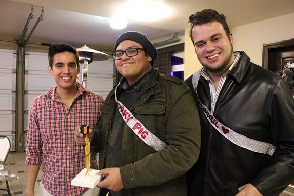

Ho Ho Ho
Oh la navidad. Una vez más llegamos a ese punto del año donde nos juntamos con nuestros seres queridos y tomamos chocolate caliente junto a la orilla de una chimenea imaginaria.
Con esta hermosa época del año llega la ya clásica Posada Discípulos, la gran fiesta anual donde cada ocasión se vuelve más especial al unir un grupo de personas que aunque ya no viven en las mismas ciudades, se reúnen para celebrar las cosas importantes en la vida: amistad, tolerancia, y José.
